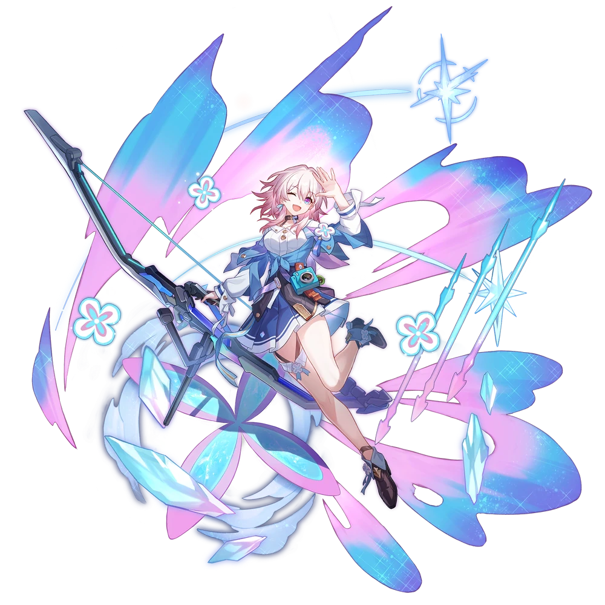
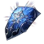
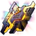

| Nome | 7 de Março |
|---|---|
| Elemento | Gelo | Raridade | ✦ ✦ ✦ ✦ |
| Caminho | A Preservação |
| Sexo | Fêmea |
| Especie | Humano |
| Facção | Astral Express O sem-nome | Mundo | Expresso Astral | Como obter | Olho da Tempestade Qualquer Banner Warp | Data de Lançamento | 2023-04-26 | Adicionado pela primeira vez | Versão 0.6.0 |
Ascensões e estatísticas
| Fase de Ascensão | Level | Base HP | Base ATK | Base DEF | Base SPD |
|---|---|---|---|---|---|
| 0✦ | 1/20 | 144 | 69 | 78 | 101 |
| 20/20 | 280 | 135 | 152 | 101 | |
| 1✦ | 20/30 | 338 | 163 | 183 | 101 |
| 30/30 | 410 | 198 | 222 | 101 | |
| 2✦ | 30/40 | 468 | 226 | 253 | 101 |
| 40/40 | 540 | 261 | 292 | 101 | |
| 3✦ | 40/50 | 597 | 288 | 323 | 101 |
| 50/50 | 669 | 323 | 362 | 101 | |
| 4✦ | 50/60 | 727 | 351 | 393 | 101 |
| 60/60 | 799 | 386 | 432 | 101 | |
| 5✦ | 60/70 | 856 | 414 | 464 | 101 |
| 70/70 | 928 | 448 | 503 | 101 | |
| 6✦ | 70/80 | 986 | 476 | 534 | 101 |
| 80/80 | 1,058 | 511 | 573 | 101 |
| Nível | Custo de Evolução | Materiais de Ascensão do Personagem | Materiais Necessários |
|---|---|---|---|
| 0 → 1 ✦ |  3,200 3,200 |
4 | |
| 1 → 2 ✦ | 6,400 |
8 | |
| 2 → 3 ✦ | 12,800 |
 2 2 |
5 |
| 3 → 4 ✦ | 32,000 |
5 |
8 |
| 4 → 5 ✦ | 64,400 |
15 |
5 |
| 5 → 6 ✦ | 128,000 |
28 |
7 |
Habilidades de combate
| Icone | Tipo | Nome | Descrição | Marcação | Energia | Resistência DMG |
|---|---|---|---|---|---|---|
| ATK básico | Flecha Frígida e Fria | Causa Ice DMG igual a 50%–130% do ATK de 7 de março a um único inimigo. | Alvo único | Geração: 20 | 30 | |
 |
Skill | O Poder da Fofura | Fornece a um único aliado um escudo que pode absorver DMG igual a 38%–66,5% da DEF de 7 de março mais 190–973,75 por 3 turno(s). Se a porcentagem de HP atual do aliado for de 30% ou mais, aumenta muito a chance de inimigos atacarem esse aliado. | Defesa | Geração: 30 | |
 |
Ultimate | Cascata Glacial | Causa DMG de gelo igual a 90%–180% do ATK de 7 de março a todos os inimigos. Inimigos atingidos têm 50% de chance base de serem Congelados por 1 turno(s). Enquanto congelados, os inimigos não podem agir e receberão Ice DMG adicional igual a 30%–75% do ATK de 7 de março no início de cada turno. | AoE | Custo: 120 Geração: 5 | 60 |
 |
Talento | Poder Feminino | Depois que um aliado blindado é atacado por um inimigo, 7 de março imediatamente contra-ataca , causando DMG de gelo igual a 50%–125% de seu ATK. Este efeito pode ser acionado 2 vez(es) a cada turno. | Alvo único | Geração: 10 | 30 |
 |
Técnica | Beleza Congelante | Imediatamente ataca o inimigo. Depois de entrar na batalha, há 100% de chance básica de Congelar um inimigo aleatório por 1 turno(s). Enquanto Congelado, o inimigo não pode agir e receberá DMG de Gelo Adicional igual a 50% do ATK de 7 de março no início de cada turno." | 60 |
Eidolons
| Icone | Nome da habilidade | Nivel | Descrição |
|---|---|---|---|
 |
Memória de você | 1 | Toda vez que o Ultimate de 7 de março congela um alvo, ela regenera 6 de energia. |
 |
Memória disso | 2 | Ao entrar na batalha, concede um Escudo igual a 24% da DEF de 7 de março mais 320 ao aliado com menor porcentagem de HP, com duração de 3 turno(s). |
 |
Memória de tudo | 3 | Nível final +2, até um máximo de Lv. 15. ATK Básico Lv. +1, até um máximo de Lv. 10. |
 |
Nunca mais perca | 4 | O efeito do Contador de Talentos pode ser acionado mais 1 vez em cada turno. O DMG causado pelo Counter aumenta em um valor igual a 30% da DEF de 7 de março. |
 |
Nunca mais esqueça | 5 | Habilidade Nv. +2, até um máximo de Lv. 15. Talento Nv. +2, até um máximo de Lv. 15. |
 |
Assim, Sempre... | 6 | Aliados sob a proteção do Escudo concedido pela Habilidade restauram HP igual a 4% de seu HP Máximo mais 106 no início de cada turno. |
Traços
| Custo Total (1 → 6 para rastreamento de ATK básico) | ||||||
|---|---|---|---|---|---|---|
| 192.000 |
4 | 5 | 5 | 2 | 6 | 8 |
| Custo total (1 → 10 para um rastreamento) | ||||||||
|---|---|---|---|---|---|---|---|---|
| 522.000 |
6 | 10 | 5 | 2 | 12 | 23 | .webp) 3 3 |
 1 1 |